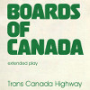

Citations
| Image Thumbnail | Source |
| Free clipart accessed from https://openclipart.org/detail/227111/social-media-2 | |
| Free clipart accessed from https://openclipart.org/detail/13105/logic-functions-digital-electronics | |
| Free clipart accessed from https://openclipart.org/detail/171037/normal-distn-tails-shaded-inside-ones | |
 |
Free clipart accessed from https://openclipart.org/detail/4641/photorealistic-green-apple |
|  | Copyright Boards of Canada. Accessed from https://en.wikipedia.org/wiki/Trans_Canada_Highway_(EP)#/media/File:Boards_of_Canada_-_Trans_Canada_Highway.png |
| Copyright LinkedIn. Accessed from https://commons.wikimedia.org/wiki/File:LinkedIn_Logo.svg | |
| Copyright SoundCloud. Accessed from http://bassmusic.wikia.com/wiki/File:Soundcloud-logo.png | |
| Free clipart accessed from https://openclipart.org/detail/95035/adjustable-wrench |
** All other images used are the intellectual property of myself, Zach Shaver.